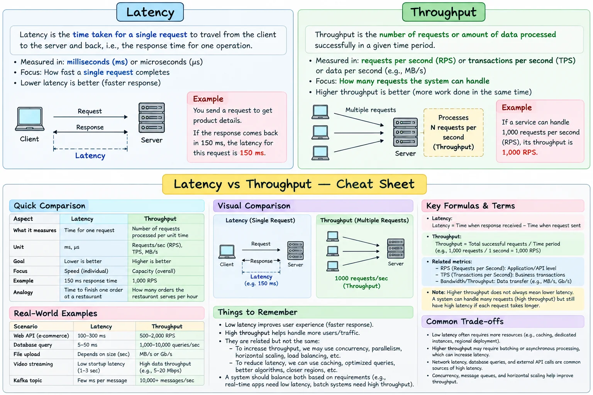

Topic · System Design Fundamentals
Latency and Throughput
How long one operation takes versus how much work completes per second - and why improving one can hurt the other.
Cheat sheet


Quick Revision
- Latency = time for one operation; throughput = work completed per unit time (RPS, TPS, messages/s, bytes/s).
- Optimize tail latency (p95, p99), not only averages.
- High throughput does not mean low latency - batching raises throughput but adds per-item latency.
concurrency ≈ throughput × latency.- Watch p50/p95/p99, error rate, saturation, and queue depth.
Design checklist
- Requirements - target p99, peak RPS, payload size, burstiness, SLA.
- Estimation - peak RPS, bandwidth, and
concurrency ≈ throughput × latency. - High-level design - client → load balancer → stateless services → cache/database, with queues for slow work.
- Deep dives - tail latency, connection pools, backpressure, load shedding, timeouts, tracing, load tests.
Trade-offs
| Choice | Benefit | Cost / risk |
|---|---|---|
| Batch requests | Higher throughput, fewer network calls | Higher per-item latency |
Failure modes
- Average looks healthy, some users are slow - monitor p95/p99, per-hop latency, queueing time, distributed traces.
- Retries amplify an outage - bounded retry budgets, exponential backoff with jitter, timeouts, load shedding.
Interview practice
Answer aloud, then reveal.
CRED: compute latency, throughput, and error rate; support p90 later.
Latency = completion time − start time; throughput = completed events ÷ window duration; error rate = failures ÷ total. For p90, keep and sort bounded windows, or use a streaming histogram / quantile sketch at scale.